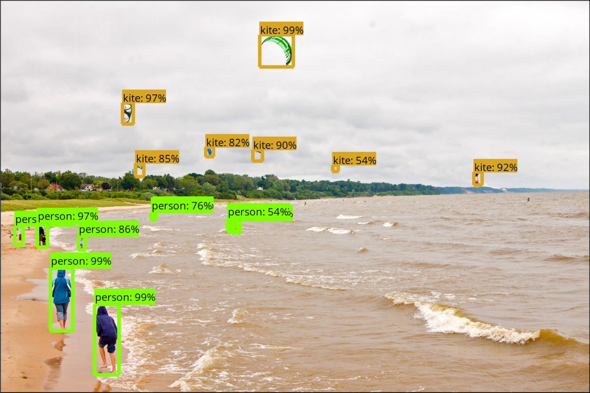
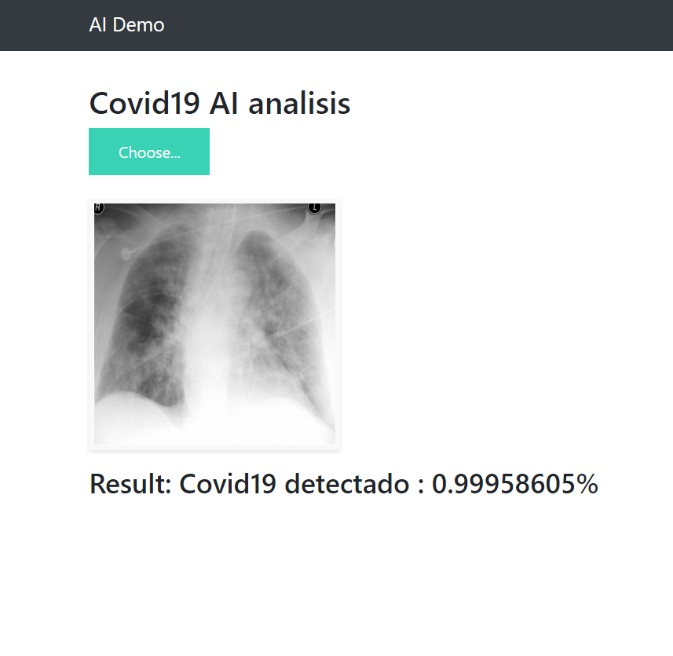
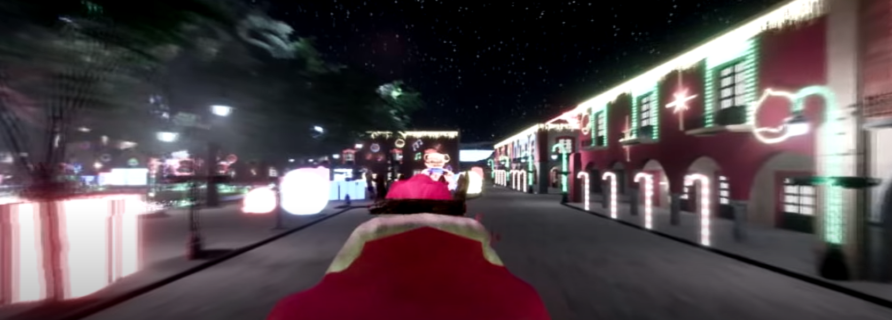
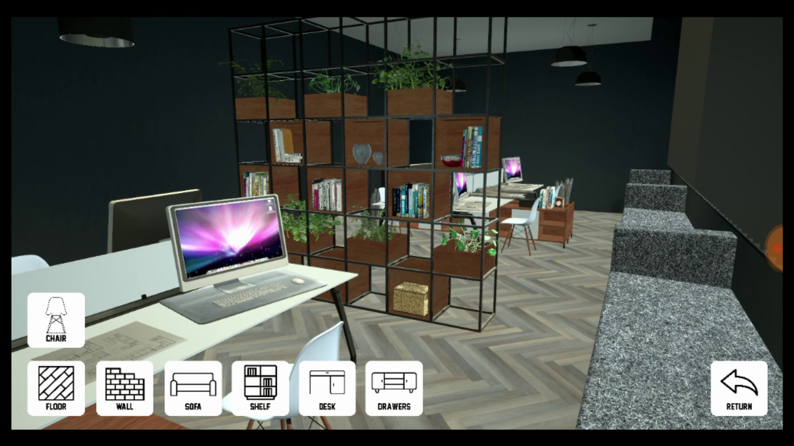
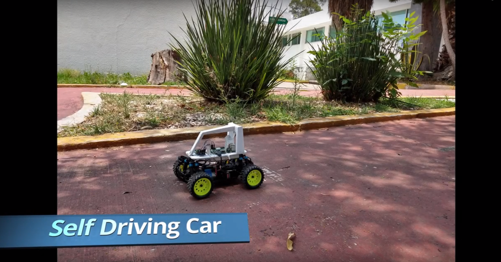
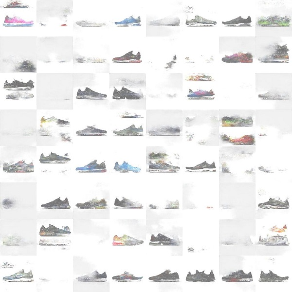
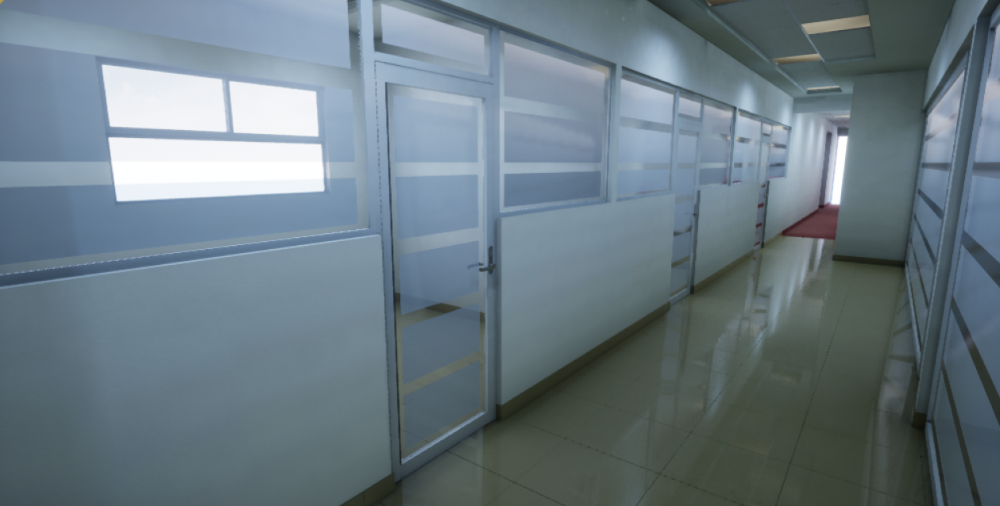
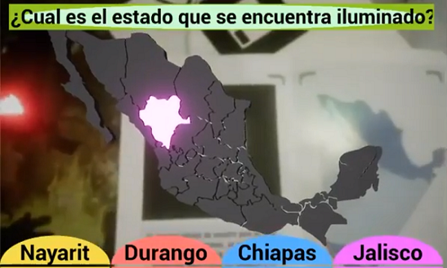

Ingeniero de Software | Entusiasta de la Inteligencia Artificial | Realidad Aumentada | Realidad Virtual | apasionado del codigo. Disfruto el desarrollo y aprender acerca de tecnologia, asi como la divulgación de la misma para comprender mejor sus implicaciones y efectos en nuestras vidas.
About Me
Projects
LKE
Computer Vision Framework

New
Sistema end-to-end para el entrenamiento de redes neuronales usando Tensorflow, para la clasificacion y deteccion de objetos. A traves de una interfaz el usuario tiene acceso a un conjunto de modelos creados por Google, los cuales puede descargar y usar sin necesidad de programar lineas de codigo. Software Open Source de autoria propia.

COVID 19 AI Detector Demo
Aplicacion web para analizar raiografias de pacientes sospechosos de haber contraido Covid19. Usando un modelo de red neuronal profunda se devuelve una probabilidad de que los pulmones se encuentren con cierto grado de deterioro a causa de la enfermedad. Este proyecto fue montado gracias a la colaboarción de distintos investigadores. Se encuentra abierto al publico unicamente con fines de aprendizaje y sin animo de lucro.

Villa Navideña VR
Aplicación en realidad virtual como recorrido de la villa iluminada en Atlixco,Puebla. Se crea una sesion compartida por un maximo de quince dispositivos los cuales disfrutan el recorrido al mismo tiempo.

Archviz for mobile
Recorrido de visualizacion arquitectonica para mobiles, en tiempo real es posible actualizar los items y materiales de distintos muebles en una habitacion, asi como la muestra a catalogo por internet.

Self-Driving Car Using Deep Learning
El vehiculo funciona usando una rasperry Pi conectada a los pines que manipulan la aceleracion y dirección. Se obtienen datos de entrenamiento para posteriormente entrenar un modelo usando Python y Keras.

TenisGAN
Usando redes neuronales, especificamente modelos adversarios generativos(GAN), se crean imagenes de calzado tenis, los diseños generados no existen.

Nissan Leaf VR Experience
Recorrido de realidad virtual, proyecto realizado usando Unreal Engine 4 y Oculus Rift; creado con el objetivo de promocionar el modelo Nissan LEAF 2018. Expuesto para eventos Nissan en la CDMX

LNS
Visualización arquitectonica del Laboratorio Nacional de Supercómputo del Sureste de México (BUAP), creado en Unreal Engine 4 y modelado en 3ds Max.

AR Map
Aplicación de realidad aumentada creada en Unreal Engine 4 para el aprendizaje de los estados de la republica Mexicana.
Coding is fun!
Work Experience
Villa Navideña VR - Gobierno de Atlixco (2019)
Experiencia Nissan Altima - Nissan México (2019)
Experiencia Nissan Leaf VR - Nissan México (2018)
Recorrido en realidad virtual promocional para el sistema Nissan Leaf 2018. Este proyecto fue creado usando el motor grafico Unreal Engine 4 y el sistema Oculus Rift. Duración de cuatro meses, tiempo en el cual se viajo constantemente a la CDMX.
Software Engineer - Grupo Cedinsa (2017)
Desarrollo aplicación nativa Android como alarma vecinal presentada en SMART CITY, EXPO LATAM CONGRESS
Representante en servicio al cliente (RSC) & Coordinador de turno - BlockBuster México (2012 - 2015)
Recepcion y envio de mercancia, corte de cajas, manejo de inventario, delegacion y supervision de labores semanales, atencion al publico.